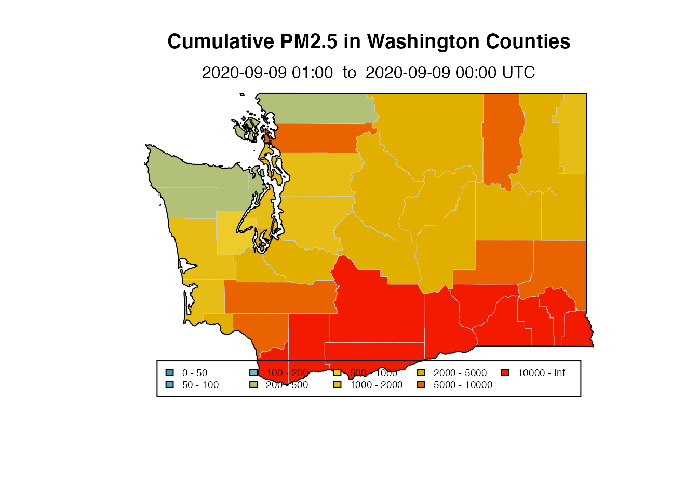
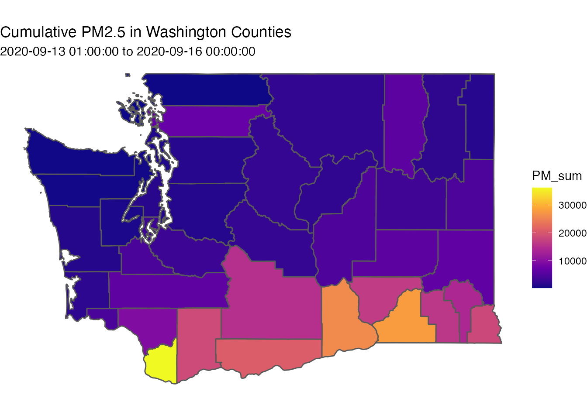

Aggregation_by_Polygon.RmdThis vignette demonstrates how to intersect spatial and gridded data, aggregating values by spatial polygon. This is useful when creating summary statistics at the state or county level. These statistics can then be presenteted as a table or as a chloropleth map.
This technique uses sp style spatial objects and is for those already familiar with the MazamaSpatialUtils package.
The MazamaSpatialUtils package is already a requirement for AirFireModeling and is therefore already installed. We will use datasets named USCensusStates and USCensusCounties. Each of these is an sp package SpatialPolygonsDataFrame (SPDF). These are “S4” objects with per-polygon data stored in the @data slot.
library("MazamaSpatialUtils")
setSpatialDataDir("~/Data/Spatial")
loadSpatialData("USCensusStates")
loadSpatialData("USCensusCounties")
WA <- subset(USCensusStates, stateCode == "WA")
WA_counties <- subset(USCensusCounties, stateCode == "WA")
plot(WA_counties, col = "gray80", border = "gray95")
plot(WA, add = TRUE)# If either dataset is missing you can install them with
# installSpatialData()
#
# Then look to see what was installed
# installedSpatialData()Data are accessbile from the @data slot which can be accessed explicitly or by reference to the SPDF.
## [1] "FIPS" "GNISCode" "AFFGeoID" "GeoID" "stateCode"
## [6] "stateName" "LSAD" "areaLand" "areaWater" "countryCode"
## [11] "polygonID"## [1] "Columbia" "Wahkiakum" "Mason" "Garfield" "Clark"
## [6] "Adams" "Island" "Pierce" "Skamania" "Chelan"
## [11] "Thurston" "Ferry" "Franklin" "Klickitat" "Clallam"
## [16] "Jefferson" "Lincoln" "Snohomish" "Okanogan" "Skagit"
## [21] "Lewis" "Whatcom" "San Juan" "King" "Pend Oreille"
## [26] "Stevens" "Kittitas" "Kitsap" "Asotin" "Spokane"
## [31] "Douglas" "Walla Walla" "Yakima" "Grant" "Benton"
## [36] "Whitman" "Cowlitz" "Grays Harbor" "Pacific"We will load data from a bluesky model and create a subset for Washington state.
Pay attention to the different types of “raster” operations. Functions named raster_~() all come from the AirFireModeling package while we will use explicit namespacing, e.g. raster::crop(), for functions that come from the raster package.
We will use the powerful raster::extract() function to summarize our data by individual polygon. In the example below, we take the median of the grid cell values within each polygon. The incoming SPDF is returned with additional columns of data.
NOTE: Summarizing by polygon can take a while.
# Summarize raster by polygon
WA_counties_improved <-
raster::extract(
WA_PNW_4km,
WA_counties,
fun = function(x, ...) { mean(x, ...) },
na.rm = TRUE,
sp = TRUE
)
# Additional columns or raster data have now been added to the SPDF
names(WA_counties_improved)## [1] "name" "areaLand" "areaWater" "countryCode" "stateCode"
## [6] "countyName" "countyFIPS" "COUNTYNS" "polygonID" "X1541725200"
## [11] "X1541728800" "X1541732400" "X1541736000" "X1541739600" "X1541743200"
## [16] "X1541746800" "X1541750400" "X1541754000" "X1541757600" "X1541761200"
## [21] "X1541764800" "X1541768400" "X1541772000" "X1541775600" "X1541779200"
## [26] "X1541782800" "X1541786400" "X1541790000" "X1541793600" "X1541797200"
## [31] "X1541800800" "X1541804400" "X1541808000" "X1541811600" "X1541815200"
## [36] "X1541818800" "X1541822400" "X1541826000" "X1541829600" "X1541833200"
## [41] "X1541836800" "X1541840400" "X1541844000" "X1541847600" "X1541851200"
## [46] "X1541854800" "X1541858400" "X1541862000" "X1541865600" "X1541869200"
## [51] "X1541872800" "X1541876400" "X1541880000" "X1541883600" "X1541887200"
## [56] "X1541890800" "X1541894400" "X1541898000" "X1541901600" "X1541905200"
## [61] "X1541908800" "X1541912400" "X1541916000" "X1541919600" "X1541923200"
## [66] "X1541926800" "X1541930400" "X1541934000" "X1541937600" "X1541941200"
## [71] "X1541944800" "X1541948400" "X1541952000" "X1541955600" "X1541959200"
## [76] "X1541962800" "X1541966400" "X1541970000" "X1541973600" "X1541977200"The columns of the form X1541725200 are all raster layers whose names encode the UTC time. These can be extracted with:
layerNames <-
names(WA_counties_improved) %>%
stringr::str_subset("X[0-9]{10}")
layerTimes <- raster_createLayerNameTimes(layerNames)
print(layerTimes)## [1] "2018-11-09 01:00:00 UTC" "2018-11-09 02:00:00 UTC"
## [3] "2018-11-09 03:00:00 UTC" "2018-11-09 04:00:00 UTC"
## [5] "2018-11-09 05:00:00 UTC" "2018-11-09 06:00:00 UTC"
## [7] "2018-11-09 07:00:00 UTC" "2018-11-09 08:00:00 UTC"
## [9] "2018-11-09 09:00:00 UTC" "2018-11-09 10:00:00 UTC"
## [11] "2018-11-09 11:00:00 UTC" "2018-11-09 12:00:00 UTC"
## [13] "2018-11-09 13:00:00 UTC" "2018-11-09 14:00:00 UTC"
## [15] "2018-11-09 15:00:00 UTC" "2018-11-09 16:00:00 UTC"
## [17] "2018-11-09 17:00:00 UTC" "2018-11-09 18:00:00 UTC"
## [19] "2018-11-09 19:00:00 UTC" "2018-11-09 20:00:00 UTC"
## [21] "2018-11-09 21:00:00 UTC" "2018-11-09 22:00:00 UTC"
## [23] "2018-11-09 23:00:00 UTC" "2018-11-10 00:00:00 UTC"
## [25] "2018-11-10 01:00:00 UTC" "2018-11-10 02:00:00 UTC"
## [27] "2018-11-10 03:00:00 UTC" "2018-11-10 04:00:00 UTC"
## [29] "2018-11-10 05:00:00 UTC" "2018-11-10 06:00:00 UTC"
## [31] "2018-11-10 07:00:00 UTC" "2018-11-10 08:00:00 UTC"
## [33] "2018-11-10 09:00:00 UTC" "2018-11-10 10:00:00 UTC"
## [35] "2018-11-10 11:00:00 UTC" "2018-11-10 12:00:00 UTC"
## [37] "2018-11-10 13:00:00 UTC" "2018-11-10 14:00:00 UTC"
## [39] "2018-11-10 15:00:00 UTC" "2018-11-10 16:00:00 UTC"
## [41] "2018-11-10 17:00:00 UTC" "2018-11-10 18:00:00 UTC"
## [43] "2018-11-10 19:00:00 UTC" "2018-11-10 20:00:00 UTC"
## [45] "2018-11-10 21:00:00 UTC" "2018-11-10 22:00:00 UTC"
## [47] "2018-11-10 23:00:00 UTC" "2018-11-11 00:00:00 UTC"
## [49] "2018-11-11 01:00:00 UTC" "2018-11-11 02:00:00 UTC"
## [51] "2018-11-11 03:00:00 UTC" "2018-11-11 04:00:00 UTC"
## [53] "2018-11-11 05:00:00 UTC" "2018-11-11 06:00:00 UTC"
## [55] "2018-11-11 07:00:00 UTC" "2018-11-11 08:00:00 UTC"
## [57] "2018-11-11 09:00:00 UTC" "2018-11-11 10:00:00 UTC"
## [59] "2018-11-11 11:00:00 UTC" "2018-11-11 12:00:00 UTC"
## [61] "2018-11-11 13:00:00 UTC" "2018-11-11 14:00:00 UTC"
## [63] "2018-11-11 15:00:00 UTC" "2018-11-11 16:00:00 UTC"
## [65] "2018-11-11 17:00:00 UTC" "2018-11-11 18:00:00 UTC"
## [67] "2018-11-11 19:00:00 UTC" "2018-11-11 20:00:00 UTC"
## [69] "2018-11-11 21:00:00 UTC" "2018-11-11 22:00:00 UTC"
## [71] "2018-11-11 23:00:00 UTC"Creating a summary dataframe is just a matter of rearranging things.
# Extract summary data and transpose
timeByCountyMatrix <-
WA_counties_improved@data[, layerNames] %>%
t()
# Create dataframe with 'datetime' column and county names
timeByCountyDF <- data.frame(timeByCountyMatrix)
names(timeByCountyDF) <- WA_counties_improved$name
timeByCountyDF <- dplyr::bind_cols(datetime = layerTimes, timeByCountyDF)
# Look at a portion of the new dataframe
knitr::kable(
timeByCountyDF[1:10,1:6],
format = "markdown",
digits = 0
)| datetime | Columbia | Wahkiakum | Mason | Garfield | Clark |
|---|---|---|---|---|---|
| 2018-11-09 01:00:00 | 0 | 0 | 0 | 0 | 14 |
| 2018-11-09 02:00:00 | 0 | 4 | 0 | 0 | 34 |
| 2018-11-09 03:00:00 | 0 | 9 | 0 | 0 | 37 |
| 2018-11-09 04:00:00 | 0 | 19 | 0 | 0 | 45 |
| 2018-11-09 05:00:00 | 0 | 39 | 0 | 1 | 54 |
| 2018-11-09 06:00:00 | 0 | 52 | 0 | 1 | 65 |
| 2018-11-09 07:00:00 | 1 | 51 | 0 | 0 | 69 |
| 2018-11-09 08:00:00 | 1 | 46 | 0 | 0 | 57 |
| 2018-11-09 09:00:00 | 1 | 33 | 0 | 0 | 47 |
| 2018-11-09 10:00:00 | 1 | 27 | 0 | 1 | 38 |
The following exmaples demonstrate low level, data handling and plotting that avoid the use of the dplry and ggplot. If you are more comfortable with lower level R functionality, this section is for you.
At this point we have a well organized dataframe that we can use any way we want. Let’s use base R functions to create a customized barplot showing cumulative smoke impacts by county.
# Remember to drop the initial 'datetime' column
countySums <-
colSums(timeByCountyDF[,-1])
# NOTE: Perhaps we should normalize by area?
# NOTE: The `areaLand` column in the SPDF is in units of m^2
# NOTE: If we do this we have to change the breaks when plotting maps.
###countySums <- countySums / (WA_counties$area/1e6)
# Extra margin on the left
par(mar = c(5,10,5,4) + .1)
# Sorted version for the barplot
sortedCountySums <- sort(countySums)
barplot(
sortedCountySums,
names = sprintf("%s %5d", names(sortedCountySums), round(sortedCountySums)),
horiz = TRUE,
xlab = "PM2.5 (\u00b5g/m3)",
las = 1 # horizontal names
)
subtitle <- sprintf(
"%s to %s UTC",
strftime(range(layerTimes)[1], "%Y-%m-%m %H:00", tz = "UTC"),
strftime(range(layerTimes)[2], "%Y-%m-%m %H:00", tz = "UTC")
)
title("Cumulative PM2.5 in Washington Counties")
mtext(subtitle, line = 0)We can create a highly customized map using the sp package plotting functions.
# Use a fun palette with 9 levels (10 breaks)
library(wesanderson)
paletteFUN <- wes_palette("Zissou1", 9, type = "continuous")
breaks <- c(0, 10, 20, 50, 100, 200, 500, 1000, 2000, Inf)
# Use the same intervals to generate a new vector colors
binCode <- .bincode(countySums, breaks)
col_county <- paletteFUN[binCode]
# Change NA to "#bbbbbb" so that we get gray instead of white for NA counties
col_county[is.na(col_county)] <- "#CCCCCC"
# Chloropleth map
plot(WA_counties, col = col_county, border = "gray80", lwd = 0.5)
plot(WA, add = TRUE)
legend(
"bottom",
cex = 0.6,
legend = paste0(round(breaks[1:9])," - ", round(breaks[2:10])),
fill = paletteFUN,
ncol = 5,
xpd = NA,
yjust = 0
)
title("Cumulative PM2.5 in Washington Counties")
mtext(subtitle, line = 0)
The following exmaples demonstrate higher level data handling and plotting for those comfortable with dplyr and ggplot.
When working with spatial data and ggplot/tidyverse, it is adventageous to use the sf package in place of the sp package mentioned above.
# Import libraries
library(ggplot2)
library(dplyr)
library(sf)
# Create A backup of the original improved county data - for safety
WA_counties_improved_alt <- WA_counties_improved
# Use dplyr mutate to a add a row summed column to the county spatial data.
# NOTE: Each column of the data represents a different hour, and each row a county.
# Therefore a summation a cumulative rowwise sum of yields the total county PM2.5 count.
WA_counties_improved_alt@data <-
WA_counties_improved_alt@data %>%
mutate(PM_sum = rowSums(.[,10:ncol(.)]))
# Use the sf package to convert the sp/st data to sf
sf_WA_counties_improved <- st_as_sf(WA_counties_improved_alt)
# Plot using ggplot syntax
WA_counties_map <- ggplot(sf_WA_counties_improved) +
geom_sf(aes(fill = PM_sum)) +
scale_fill_viridis_c(option = "C") +
theme_void() +
labs(
title = "Cumulative PM2.5 in Washington Counties",
subtitle = paste0(range(layerTimes), collapse = ' to ') # use layer times
)
print(WA_counties_map)
library(plotly)
# add hover text HTML field
sf_WA_counties_improved$hover <-
with(sf_WA_counties_improved, paste(name, '<br>', "Cumulative PM2.5: ", PM_sum))
# Create the interactive map
interactive_map <- plot_ly(
sf_WA_counties_improved,
split = ~name,
hoveron = 'fills',
text = ~hover,
color = ~PM_sum,
showlegend = FALSE
) %>%
layout(
title = list(
text = paste0('Cumulative PM2.5 in Washington Counties',
'<br>',
'<sup>',
paste0(range(layerTimes), collapse = ' to '),
'</sup>')
)
) %>%
config(displayModeBar = FALSE)
# Show the map
interactive_mapMazama Science